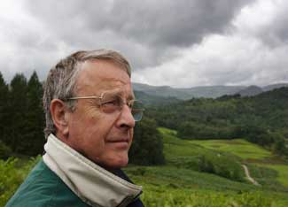

How do we live with the fact that we are destroying our world? What do we make of the loss of glaciers, the melting Arctic, island nations swamped by the sea, widening deserts and drying farmlands?
Because of social taboos, despair at the state of our world and fear for our future are rarely acknowledged. The suppression of despair, like that of any deep recurring response, contributes to the numbing of the psyche. Expressions of anguish or outrage are muted, deadened as if a nerve had been cut. This refusal to feel impoverishes our emotional and sensory life. Flowers are dimmer and less fragrant, our loves less ecstatic. We create diversions for ourselves as individuals and as nations, in the fights we pick, the aims we pursue, and the stuff we buy.
Of all the dangers we face, from climate chaos to permanent war, none is so great as this deadening of our response. For psychic numbing impedes our capacity to process and respond to information. The energy expended in pushing down despair is diverted from more crucial uses, depleting the resilience and imagination needed for fresh visions and strategies.
Zen poet Thich Nhat Hanh was asked, “what do we most need to do to save our world?” His answer was this: “What we most need to do is to hear within us the sounds of the Earth crying.”
How do we confront what we scarcely dare to think? How do we face our grief, fear, and rage without “going to pieces?”
It is good to realize that falling apart is not such a bad thing. Indeed, it is as essential to transformation as the cracking of outgrown shells. Anxieties and doubts can be healthy and creative, not only for the person, but for the society, because they permit new and original approaches to reality.
What disintegrates in periods of rapid transformation is not the self, but its defenses and assumptions. Self-protection restricts vision and movement like a suit of armor, making it harder to adapt. Going to pieces, however uncomfortable, can open us up to new perceptions, new data, and new responses.
Speaking the truth of our anguish for the world brings down the walls between us, drawing us into deep solidarity. That solidarity is all the more real for the uncertainty we face.
In our culture, despair is feared and resisted because it represents a loss of control. We’re ashamed of it and dodge it by demanding instant solutions to problems. We seek the quick fix. This cultural habit obscures our perceptions and fosters a dangerous innocence of the real world.
Acknowledging despair, on the other hand, involves nothing more mysterious than telling the truth about what we see and know and feel is happening to our world. When corporate-controlled media keep the public in the dark, and power-holders manipulate events to create a climate of fear and obedience, truth-telling is like oxygen. It enlivens and returns us to health and vigor.
Sharing what is in our heartmind brings a welcome shift in identity, as we recognize that the anger, grief, and fear we feel for our world are not reducible to concerns for our individual welfare or even survival. Our concerns are far larger than our own private needs and wants. Pain for the world-the outrage and the sorrow-breaks us open to a larger sense of who we are. It is a doorway to the realization of our mutual belonging in the web of life.
Many of us fear that confrontation with despair will bring loneliness and isolation. On the contrary, in letting go of old defenses, we find truer community. And in community, we learn to trust our inner responses to our world-and find our power.
You are not alone! We are part of a vast, global movement: the epochal transition from empire to Earth community. This is the Great Turning. And the excitement, the alarm, even the overwhelm we feel, are all part of our waking up to this collective adventure.
As in any true adventure, there is risk and uncertainty. Our corporate economy is destroying both itself and the natural world. Its effect on living systems is what David Korten calls the Great Unraveling. It is happening at the same time as the Great Turning, and we cannot know which way the story will end.
Let’s drop the notion that we can manage our planet for our own comfort and profit-or even that we can now be its ultimate redeemers. It is a delusion. Let’s accept, in its place, the radical uncertainty of our time, even the uncertainty of survival.
In primal societies, adoles cents go through rites of passage, where confronting their own mortality is a gateway to maturity. In analogous ways, climate change calls us to recognize our own mortality as a species. With the gift of uncertainty, we can grow up and accept the rights and responsibility of planetary adulthood. Then we know fully that we belong, inextricably, to the web of life, and we can serve it, and let its strength flow through us.
Uncertainty, when accepted, sheds a bright light on the power of intention. Intention is what you can count on: not the outcome, but the motivation you bring, the vision you hold, the compass setting you choose to follow. Our intention and resolve can save us from getting lost in grief.
During a recent visit to Kentucky, I learned what is happening to the landscape and culture of Appalachia: how coal companies use dynamite to pulverize everything above the underground seams of coal; how bulldozers and dragline machines 20-stories high push away the “overburden” of woodlands and top soil, filling the valleys. I saw how activists there are held steady by sheer intention. Though the nation seems oblivious to this tragedy, these men and women persist in the vision that Appalachia can, in part, be saved and that future generations may know slopes of sweet gum, sassafras, magnolia, the stirrings of bobcat and coon, and, in the hollows, the music of fiddle and fresh flowing streams. They seem to know-and, when we let down our guard, we too know-that we are living parts of the living body of Earth.
This is the gift of the Great Turning. When we open our eyes to what is happening, even when it breaks our hearts, we discover our true size; for our heart, when it breaks open, can hold the whole universe. We discover how speaking the truth of our anguish for the world brings down the walls between us, drawing us into deep solidarity. That solidarity, with our neighbors and all that lives, is all the more real for the uncertainty we face.
When we stop distracting ourselves by trying to figure the chances of success or failure, our minds and hearts are liberated into the present moment. This moment then becomes alive, charged with possibilities, as we realize how lucky we are to be alive now, to take part in this planetary adventure.
Joanna Macy wrote this article as part of Stop Global Warming Cold, the Spring 2008 issue of YES! Magazine. Joanna is a scholar of Buddhism, general systems theory and deep ecology, whose latest book is World as Lover, World as Self. She lives in Berkeley, CA.
Reprinted from "Stop Global Warming Cold," the Spring 2008 YES! Magazine, 284 Madrona Way NE Ste 116, Bainbridge Island, WA 98110. Subscriptions: 800/937-4451
|
 ISTOCKPHOTO As we reflect on the state of our world, we can realize the power we have to make a difference. |
|
|